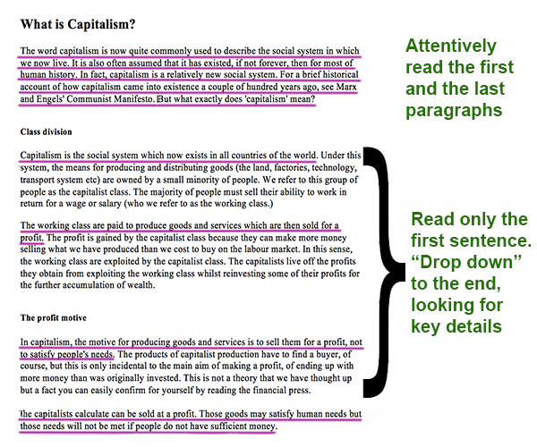
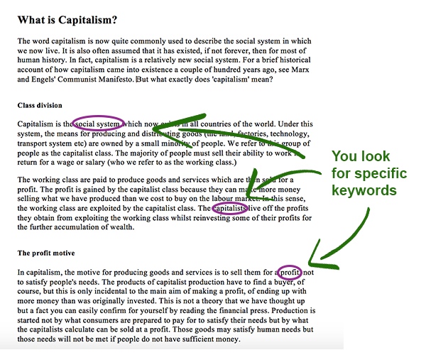

IELTS Reading lesson: Skimming and Scanning
Skimming and scanning are two very effective (yet different) strategies for speed-reading.
What is speed-reading? You may be used to read every word slowly and carefully to understand every sentence of the text. But on IELTS Reading test, you are limited in time and it’s impossible to read attentively all the information. But how to read more, in less time? One way is to use speed-reading - quickly read the text according to your purpose, getting only the information you need.
Skimming
Skimming means quickly reading the text to get only its main idea. To skim effectively, you need to read only a part of the material.
You have already encountered skimming: when reading a long chapter of a book, or doing a research on a long article. In such case, you would probably read the first sentences of each paragraph, dropping down to the end of the paragraph.
How to skim?
- Read the first paragraph attentively to get an idea of what will be discussed in the text.
- Read the first (and sometimes the second) sentence of each paragraph - they give the main idea of the paragraph.
- After you have read the first sentences, your eyes should drop down to the end of the paragraph, looking for important pieces of information, such as dates and names.
- Read the last paragraph attentively as it may contain the summary.
Here’s a picture that illustrates skimming process:
Scanning
Scanning means searching for specific phrases in the text to answer some questions.
Underline!
The questions on IELTS Reading test often include dates, names, numbers, new terms or other key words. So it’s a very good idea to underline those key words while reading, so you could find the answers in the text more easily.How to scan?
- Underline the important information while reading the text (dates, numbers, names etc.)
- When you read the question, identify the key word and scan the text for it. This way you’ll find the answer more quickly.
Scanning process looks like this:
Practice
Now it's time for practice. Like on a real IELTS Reading test, you have to read the text and answer the questions below.
First of all, let's practise skimming. When reading a text for the first time, you should skim over it to grasp the main idea. In this example, read the highlighted text and quickly look over the rest of the text (you have about 1-2 minutes):
Are electric cars really eco-friendly?
That is why a Tesla owner got a rude shock when he went to import his vehicle into Singapore - the first person to do so. The Tesla Model S is a 100% electric vehicle. It does not have an exhaust to emit from. So what happened?
Instead of an expected rebate of around S$15,000 (US$10,800) he received a fine of the same amount for being a gross polluter. The company commented the incident, "The Model S that our customer imported into Singapore left our factory only two years ago with energy consumption rated at 181 Wh/km. This qualifies as the cleanest possible category of car in Singapore and entitles the owner to an incentive rather than a fine."
The Singapore authorities calculated the ‘carbon cost’ of generating the electricity that will be used to charge the car. This is the elephant in the trunk of electric vehicles. Where and how the power is produced is not often considered, but perhaps it should be. Let’s move the elephant up to the passenger seat and address it directly.
The authorities in Singapore apparently found the Tesla in question consumes 444 watt-hours of electricity per km (Wh/km) in tests. Without wanting to get too maths-heavy, the number of 444Wh/km does seem high. And as we still need power stations to produce such amount electric energy, the environmental impact is not so small as it seemed to be.
But what about the bigger picture - should we be factoring in the emissions of power stations when working out how green an electric car is? The logical answer is yes. Emissions shifted elsewhere are still emissions, and CO2 impacts the global atmosphere wherever it is released.
After you’ve skimmed the text, you should get the general idea: one man imported an electric car to Singapore and was fined for that, because the car was considered as a polluter. It turned out that electric cars can also be dangerous for the environment, because electric energy used to charge them is produced at power stations, which emit pollutants.
Now let’s look at the questions:
1. What is the aim of this text?
- To discourage people from visiting Singapore
- To prove that electric cars are less eco-friendly than fossil-fuel-powered machines
- To show that we need to count the emissions of power stations to see how green an electric car is.
This question can be answered immediately after you skimmed over the text. Here, you’re required to understand only the main idea of the passage.
Obviously, the correct answer is C. It’s also stated in the last paragraph:
But what about the bigger picture - should we be factoring in the emissions of power stations when working out how green an electric car is? The logical answer is yes.
2. When the owner of the electric car went to Singapore, he received
- a rebate of around US$10,800
- a fine of around US$10,800
- a fine of around US$15,000
And this question, unlike the previous one, requires specific detail: amount of money. To answer it, you should scan the text for words $10,800 and $15,000. Don’t read the text again! Just search these two key words. Once you have found the right sentence, read it attentively to get the answer.
The sentence that contains these key words is in the third paragraph:
Instead of an expected rebate of around S$15,000 (US$10,800) he received a fine of the same amount for being a gross polluter.
Now it’s clear to us that the correct answer is B.
3. To prove that electric car was a gross polluter, the authorities in Singapore calculated the ...................... of generating the electricity to charge the car.
After you skimmed over the article, you should know that the Singapore authorities and charging car were mentioned somewhere in the middle of the text. Moreover, you have another clue: the answer should be after the answer to the question 3. You can find the right answer by these key words:
- authorities in Singapore
- electricity to charge the car
If you scan the text for these key words, and you will find the answer in the fourth paragraph:
The Singapore authorities calculated the ‘carbon cost’ of generating the electricity that will be used to charge the car.
The correct answer is carbon cost.